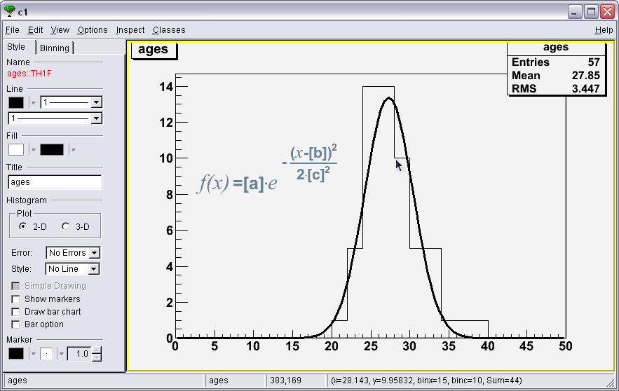
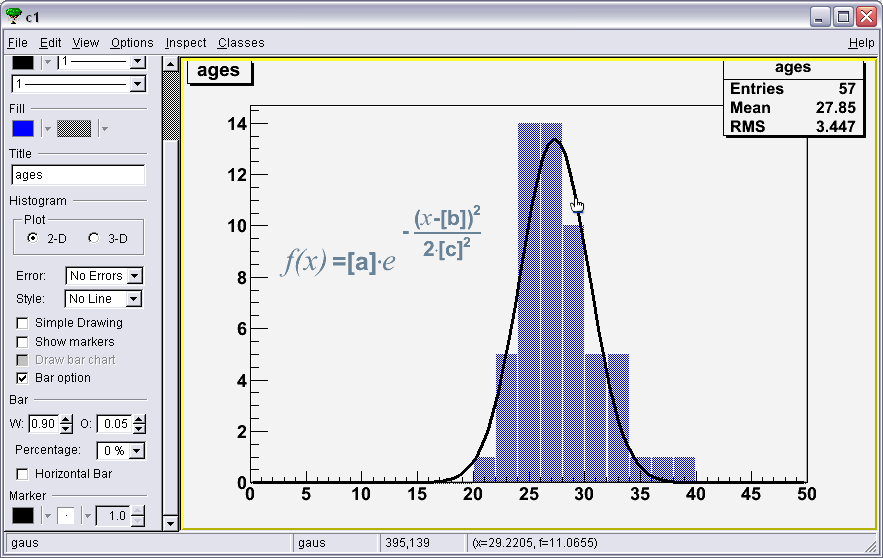
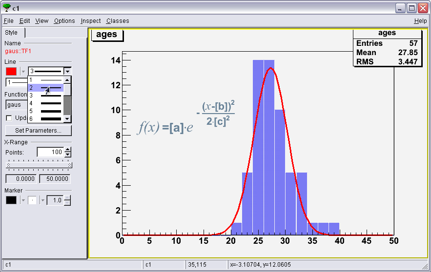

Execute ages.C. It creates and displays a histogram showing teh age distribution of the participants of a CSC. Use the editor (in the TCanvas's menu under View > Editor) to make the histogram look like this one:

Got stuck? This is the solution
Execute ages.C. It creates and displays a histogram showing teh age distribution of the participants of a CSC. Use the editor (in the TCanvas's menu under View > Editor) to make the histogram look like this one:
Once the Editor is open (as shown in the previous help, click on one edge of the histogram to switch the editor.

Then you can change the fill color.

Then change the fill style.

Then the "bar" options.

Select a bar width of 0.90 (means 90%)
And a bar offset of 0.05 (to center the bars between the bin limits)

Same for the line properties of the fit (select fit object by clicking on the line).



Now you can zoom the X axis to obtain (more or less) the same limits than the ones on the example.

At last, to diplay fit information, click on the box containing histogram infos (Entries, Mean and RMS) and check "values" in "Fit Options field".